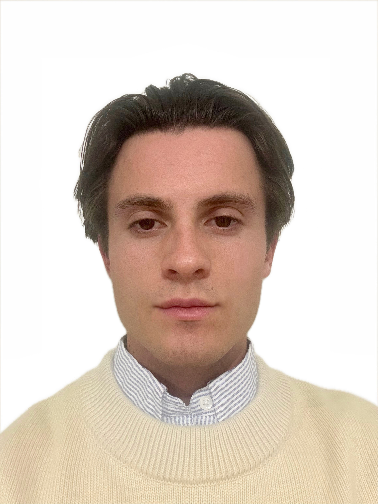

Victor Gaya
Deep learning for optical & SAR remote sensing
Research Fellow, National University of Singapore
About me
I am a PhD graduate from Télécom Paris (Institut Polytechnique de Paris), where I worked with the CEA (Commissariat à l'Énergie Atomique et aux Énergies Alternatives) on deep learning methods for SAR (Synthetic Aperture Radar) image restoration. I defended my thesis, Deep learning for SAR image enhancement: multi-modal fusion and interferometric denoising, in 2025.
I am now a Research Fellow at the National University of Singapore, working on deep learning for optical and SAR remote sensing. My current topics include vision-language models, InSAR, cross-modal registration, diffusion-based image translation, calibration, polarimetry, and physics-informed models. I also co-supervise several students across these directions.
Deep learning for optical & SAR remote sensing. Co-supervising students on vision-language models, InSAR, cross-modal registration, diffusion-based image translation and calibration, alongside my own work on polarimetry and physics-informed models.